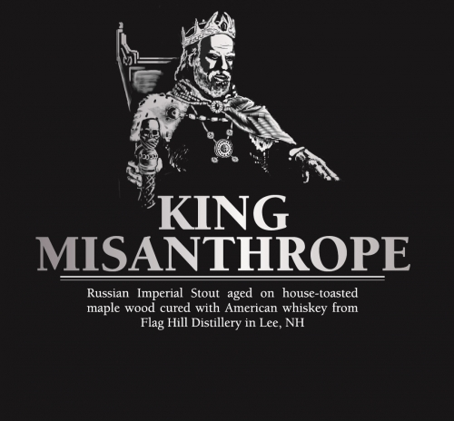

HOME
STOUTS
King Misanthrope
Henniker Brewing Co.
Bold, dark, strong, and unapologetic. King Misanthrope is a Russian Imperial Stout aged on house-toasted Maplewood cured with American whiskey from Flag Hill Distillery in Lee, NH and is the 4th release in our Off the Grid Series. Look for notes of baker’s chocolate, coffee, maple, figs, charred wood, and whiskey.
Our brewery is tucked away in the woods down Centervale Road just outside of downtown Henniker, NH.
Check out their site HERE 